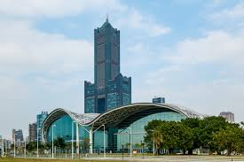

<html>
<head>
<title>高雄市旅遊景點~我的首頁</title>
</head>
<body>
<div>
<video src="85大樓.mp4" controls autoplay />
</div>
</body>
<body>
<center>
<b>
雄偉的85大樓
</b>
<br>
高雄85大樓（85 Sky Tower），前稱東帝士85國際廣場、東帝士建台大樓，<br>
位於臺灣高雄市苓雅區，緊鄰著高雄港和新光碼頭，是85層樓高的摩天大樓，<br>
為高雄第一高樓，亦為台灣第二高的摩天大樓，也是1990年代後期臺灣最高的建築物。<br>


<p>
<a href="2.html">連到第二頁 </a>
<p>
<a href="3.html">連到第三頁 </a>
</br>
<p>
<a href="4.html">連到我的課程心得 </a>
</br>

</center>


</body>
</html>
